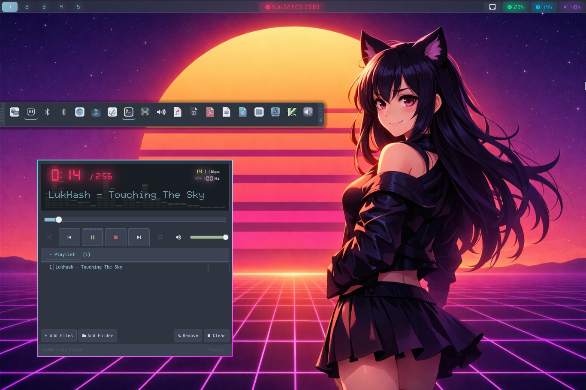

Powered by OpenCode
AI-Orchestrated Arch Linux
A Nordic cyberpunk Arch Linux distribution optimized for low-RAM systems, with integrated AI for smart system management. Nord palette, neon glow, synthwave soul.
300MB
RAM Usage
1.9GB
Minimum RAM
100%
Open Source
